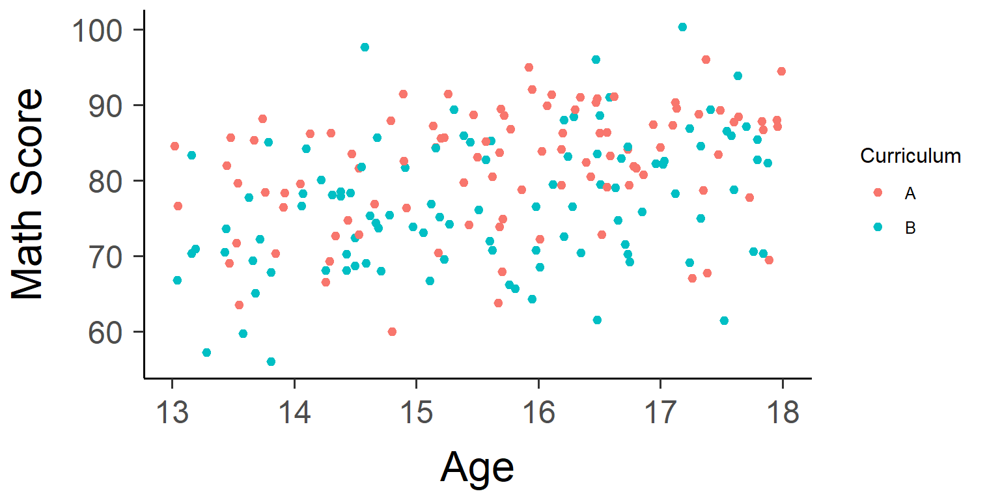
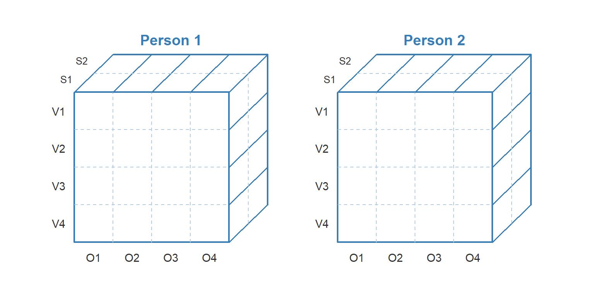
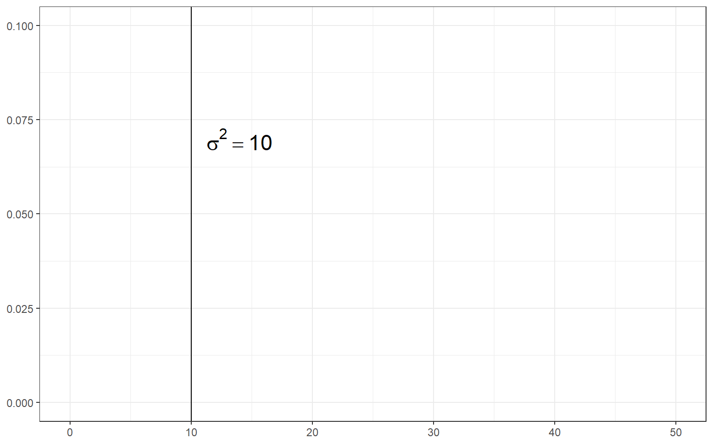
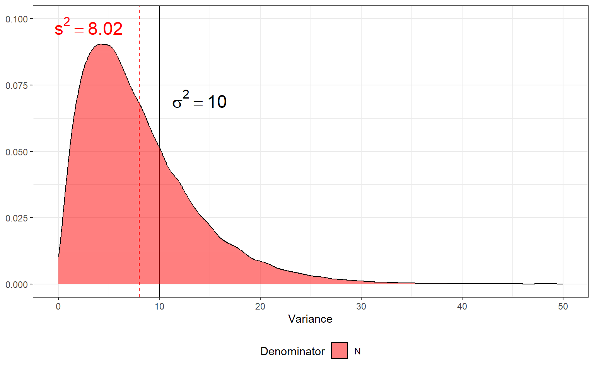
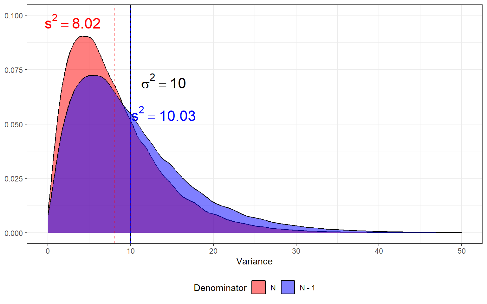
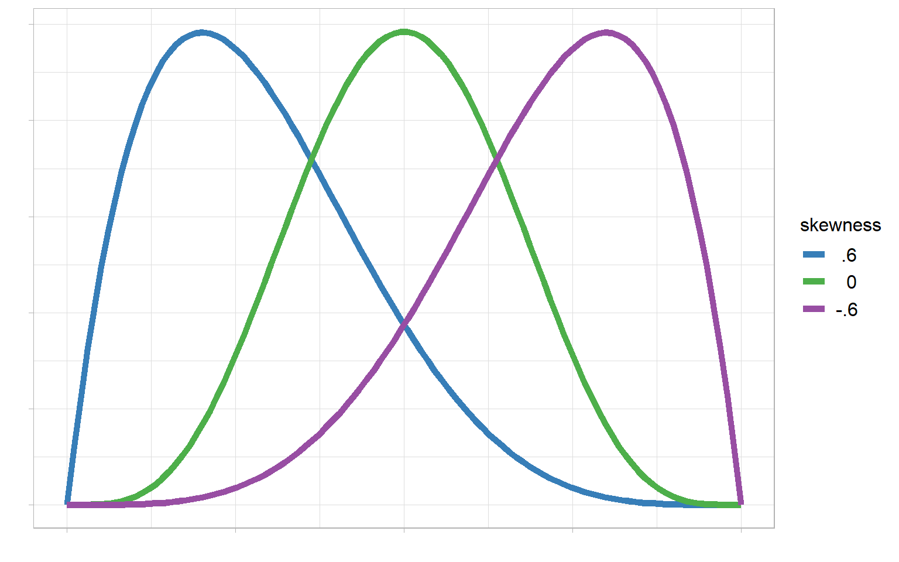
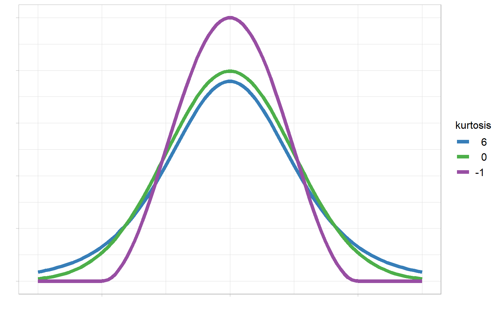

# A tibble: 10 × 6
Participant_ID Num_Siblings Gender Age Shoe_Size IQ
<int> <dbl> <fct> <dbl> <dbl> <dbl>
1 1 1 M 18.1 10.5 121
2 2 2 M 35.4 9.5 109
3 3 2 M 42.6 10 113
4 4 1 F 19.6 7.5 123
5 5 2 M 20.4 9 95
6 6 1 F 23.4 7 110
7 7 0 F 26.8 7.5 103
8 8 3 F 18.3 8.5 99
9 9 3 F 30.6 6.5 120
10 10 0 M 29.7 9.5 95Lecture 2: Exploring Data
Mark Himmelstein
What is this class about?
A lot of people think statistics is math.
But it’s so much more. It’s also science, it’s also philosophy, and even has roots in psychology
What is this class about?
It is the way we take information that is messy and difficult to learn anything from….

What is Statistics?
….and figure out what it can tell us if we look at it carefully enough….

Data and Simulation
That data wasn’t real. It was simulated
- I gave the computer some parameters
- It generated random data based on those parameters
Simulation is an increasingly important tool in the statisticians toolkit! You’ll learn more about this throughout the class and in lab. For now, the important thing to understand….
Probability and Statistics

Probability tells us how data are randomly generated based on some underlying facts about a population.
Statistics are how we infer underlying facts about a population from a finite set of observed data (sample).
This course will begin and end with statistics, with many detours to probability along the way
Terminology
The difference between statistics and probability is in what is known or held constant
- In probability parameters are assumed to be known
- Parameter: A quantity that describes (a property of) an entire population
- In statistics data are assumed to be known
What IS/ARE data? (Singular: datum)
- Distinct pieces of observed information
- Statistic: Quantity calculated from a finite amount of data to estimate a parameter
We often arrange data into rectangular datasets
An Example Dataset
Rows: persons
Columns: variables/responses
The Data Box
- Cattell (1966, 1988) proposed the concept of a data box to describe the structure of data.
- The data box can be useful in understanding the research question, research design, and statistical analysis.
Suggested readings:
- Cattell, R. B. (1988). The data box: Its ordering of total resources in terms of possible relational systems. In J. R. Nesselroade & R. B. Cattell (Eds.), Perspectives on individual differences. Handbook of multivariate experimental psychology (pp. 69–130). Plenum Press. https://doi.org/10.1007/978-1-4613-0893-5_3
- Biesanz, J. C., West, S. G., & Kwok, O. M. (2003). Personality over time: Methodological approaches to the study of short-term and long-term development and change. Journal of Personality, 71(6), 905–942. https://doi.org/10.1111/1467-6494.7106002
- Ozer, D. J. (1986). Consistency in personality: A methodological framework. Springer-Verlag.
The Data Box
Four dimensions:
- Person (P)
- Occasion (O)
- Situation (S)
- Variable (V)

The Data Box & Research Designs
Example:
- Persons: individual children
- Occasion: child age (e.g., 6, 8, 10)
- Situation: before/after a snack
- Variable: scores on different recall tasks
Cross-Sectional Design (single time point):
- Person \(\times\) Variable
- Test scores of a sample of 6-year-olds
- Person \(\times\) Situation \(\times\) Variable
- Test scores of a sample of 6-year-olds measured before and after a snack
Longitudinal Designs (multiple time points):
- Person \(\times\) Occasion \(\times\) Variable (single response)
- Test scores of the same children at ages 6, 8, and 10
- Person \(\times\) Occasion \(\times\) Situation \(\times\) Variable (multiple responses)
- Test scores of the same children at ages 6, 8, and 10, measured before and after a snack
Measurement Scales
Stevens (1946) classified variables as being measured on one of four scales:
Nominal: Variables with discrete categories
Ordinal: Variables with ordering or ranking, distances between scale points are not equal
Interval: Distances between scale points are equal (zero has no special meaning)
Ratio: Distances between scale points are equal (zero has a special meaning, usually the absence of the trait)
Stevens, S. S. (1946). On the theory of scales of measurement. Science, 103, 677–680. https://doi.org/10.1126/science.103.2684.677
Measurement Scales
My recommendation: Don’t take measurement scales too seriously
Perhaps a more useful distinction:
Discrete/Categorical variables - Frequencies
Percentages
Chi-square tests
Logistic Regression
Continuous variables
Mean
Standard Deviation
\(t\)-tests
Correlation
- Middle ground: count data, Likert scales
Better to understand what statistical tests can and cannot tell you, and whether interpretations make sense
Thinking it Through
It can also be helpful to think about how different types of data compare to one another. In what ways are the following variables different or similar in terms of their data structure?
The number of siblings a person has vs. a person’s age
the number of points the home team scores vs. the difference in score between the two teams
the probability a political incumbent wins election vs. the number of votes they receive
Thinking about these differences can be critical to understanding what statistical techniques and interpretations are appropriate.
2026 NBA Data
Rows: 258
Columns: 29
$ Player <chr> "Luka Dončić", "Shai Gilgeous-Alexande…
$ Age <int> 26, 27, 24, 29, 25, 34, 29, 30, 28, 37…
$ Team <chr> "LAL", "OKC", "MIN", "BOS", "PHI", "LA…
$ Height <dbl> 200.66, 198.12, 193.04, 198.12, 187.96…
$ Weight <dbl> 104.32616, 88.45044, 102.05820, 101.15…
$ College <chr> "", "Kentucky", "Georgia", "California…
$ Country <chr> "Slovenia", "Canada", "USA", "USA", "U…
$ draft_year <chr> "2018", "2018", "2020", "2016", "2020"…
$ draft_round <chr> "1", "1", "1", "1", "1", "1", "1", "2"…
$ Pos <chr> "PG", "PG", "SG", "SF", "PG", "SF", "S…
$ G <int> 64, 68, 61, 71, 70, 65, 70, 65, 42, 43…
$ GS <int> 64, 68, 60, 71, 70, 65, 70, 65, 42, 41…
$ MP <dbl> 35.8, 33.2, 35.0, 34.4, 38.0, 32.1, 33…
$ PTS <dbl> 33.5, 31.1, 28.8, 28.7, 28.3, 27.9, 27…
$ FG <dbl> 10.8, 10.8, 9.9, 10.4, 9.9, 9.8, 9.7, …
$ FGA <dbl> 22.8, 19.4, 20.2, 21.7, 21.4, 19.4, 20…
$ FGp <dbl> 0.476, 0.553, 0.489, 0.477, 0.462, 0.5…
$ TP <dbl> 4.0, 1.7, 3.4, 2.0, 3.1, 2.6, 3.2, 1.7…
$ TPA <dbl> 10.8, 4.4, 8.4, 5.7, 8.6, 6.8, 8.8, 4.…
$ TPp <dbl> 0.366, 0.386, 0.399, 0.347, 0.367, 0.3…
$ FT <dbl> 7.9, 7.9, 5.7, 6.0, 5.3, 5.7, 5.3, 6.1…
$ FTA <dbl> 10.1, 9.0, 7.2, 7.5, 6.0, 6.4, 6.1, 7.…
$ FTp <dbl> 0.780, 0.879, 0.796, 0.795, 0.892, 0.8…
$ ORB <dbl> 0.6, 0.6, 0.6, 1.1, 0.3, 1.1, 0.7, 3.0…
$ DRB <dbl> 7.1, 3.7, 4.4, 5.8, 3.8, 5.3, 3.8, 9.9…
$ TRB <dbl> 7.7, 4.3, 5.0, 6.9, 4.1, 6.4, 4.5, 12.…
$ AST <dbl> 8.3, 6.6, 3.7, 5.1, 6.6, 3.6, 5.7, 10.…
$ STL <dbl> 1.6, 1.4, 1.4, 1.0, 1.9, 1.9, 1.5, 1.4…
$ BLK <dbl> 0.5, 0.8, 0.8, 0.4, 0.8, 0.4, 0.3, 0.8…2026 NBA Data Sources
- Basketball Reference 2026 season statistics
- Kaggle dataset with demographic data on players through 2021
- Means we are missing demographic data on some younger players
- I removed these players from our dataset for simplicity
Variable Types in R
Which variables are discrete? Continuous? How can you tell?
2026 NBA Data Variables
| Variable | Description |
|---|---|
| Player | Player’s Name |
| Age | Player’s Age |
| Team | Player’s Team |
| Height | Player’s Height (cm) |
| Weight | Player’s Weight (kg) |
| College | College Attended |
| Country | Country of Origin |
| draft_year | Year Drafted |
| draft_round | Round Drafted |
| Pos | Primary Position |
| G | Games Played |
| GS | Games Started |
| MP | Minutes Played |
| PTS | Points Per Game |
| FG | Field Goals Per Game |
| FGA | Field Goal Attempts Per Game |
| FGp | Field Goal Percentage |
| TP | Three Pointers per Game |
| TPA | Three Point Attempts per Game |
| TPp | Three Point Percentage |
| FT | Free Throws per Game |
| FTA | Free Throw Attempts per Game |
| FTp | Free Throw Percentage |
| ORB | Offensive Rebounds per Game |
| DRB | Defensive Rebounds per Game |
| TRB | Total Rebounds Per Game |
| AST | Assists per Game |
| STL | Steals per Game |
| BLK | Blocks per Game |
Factors and Logicals
bball <- bball |> mutate(draft_round = factor(draft_round),
# new variable for whether player was drafted:
drafted = draft_round != "Undrafted")
bball |>
glimpse()Rows: 258
Columns: 30
$ Player <chr> "Luka Dončić", "Shai Gilgeous-Alexande…
$ Age <int> 26, 27, 24, 29, 25, 34, 29, 30, 28, 37…
$ Team <chr> "LAL", "OKC", "MIN", "BOS", "PHI", "LA…
$ Height <dbl> 200.66, 198.12, 193.04, 198.12, 187.96…
$ Weight <dbl> 104.32616, 88.45044, 102.05820, 101.15…
$ College <chr> "", "Kentucky", "Georgia", "California…
$ Country <chr> "Slovenia", "Canada", "USA", "USA", "U…
$ draft_year <chr> "2018", "2018", "2020", "2016", "2020"…
$ draft_round <fct> 1, 1, 1, 1, 1, 1, 1, 2, 1, 1, 1, 2, 1,…
$ Pos <chr> "PG", "PG", "SG", "SF", "PG", "SF", "S…
$ G <int> 64, 68, 61, 71, 70, 65, 70, 65, 42, 43…
$ GS <int> 64, 68, 60, 71, 70, 65, 70, 65, 42, 41…
$ MP <dbl> 35.8, 33.2, 35.0, 34.4, 38.0, 32.1, 33…
$ PTS <dbl> 33.5, 31.1, 28.8, 28.7, 28.3, 27.9, 27…
$ FG <dbl> 10.8, 10.8, 9.9, 10.4, 9.9, 9.8, 9.7, …
$ FGA <dbl> 22.8, 19.4, 20.2, 21.7, 21.4, 19.4, 20…
$ FGp <dbl> 0.476, 0.553, 0.489, 0.477, 0.462, 0.5…
$ TP <dbl> 4.0, 1.7, 3.4, 2.0, 3.1, 2.6, 3.2, 1.7…
$ TPA <dbl> 10.8, 4.4, 8.4, 5.7, 8.6, 6.8, 8.8, 4.…
$ TPp <dbl> 0.366, 0.386, 0.399, 0.347, 0.367, 0.3…
$ FT <dbl> 7.9, 7.9, 5.7, 6.0, 5.3, 5.7, 5.3, 6.1…
$ FTA <dbl> 10.1, 9.0, 7.2, 7.5, 6.0, 6.4, 6.1, 7.…
$ FTp <dbl> 0.780, 0.879, 0.796, 0.795, 0.892, 0.8…
$ ORB <dbl> 0.6, 0.6, 0.6, 1.1, 0.3, 1.1, 0.7, 3.0…
$ DRB <dbl> 7.1, 3.7, 4.4, 5.8, 3.8, 5.3, 3.8, 9.9…
$ TRB <dbl> 7.7, 4.3, 5.0, 6.9, 4.1, 6.4, 4.5, 12.…
$ AST <dbl> 8.3, 6.6, 3.7, 5.1, 6.6, 3.6, 5.7, 10.…
$ STL <dbl> 1.6, 1.4, 1.4, 1.0, 1.9, 1.9, 1.5, 1.4…
$ BLK <dbl> 0.5, 0.8, 0.8, 0.4, 0.8, 0.4, 0.3, 0.8…
$ drafted <lgl> TRUE, TRUE, TRUE, TRUE, TRUE, TRUE, TR…Descriptive Statistics: Discrete Data
Frequencies: Counts of each category
Proportions (Relative Frequencies): Counts of each category
Percentages: Proportions \(\times\) 100
Frequency Table
Country | Round 1 | Round 2 | Undrafted |
|---|---|---|---|
USA | 119 (74.38%) | 38 (73.08%) | 41 (89.13%) |
Canada | 8 (5%) | 3 (5.77%) | 1 (2.17%) |
France | 5 (3.12%) | 1 (1.92%) | 0 (0%) |
Australia | 3 (1.87%) | 0 (0%) | 2 (4.35%) |
Bahamas | 3 (1.87%) | 0 (0%) | 0 (0%) |
Japan | 2 (1.25%) | 0 (0%) | 0 (0%) |
Montenegro | 2 (1.25%) | 0 (0%) | 0 (0%) |
Nigeria | 2 (1.25%) | 0 (0%) | 0 (0%) |
Austria | 1 (0.63%) | 0 (0%) | 0 (0%) |
Bosnia and Herzegovina | 1 (0.63%) | 0 (0%) | 0 (0%) |
Cameroon | 1 (0.63%) | 0 (0%) | 0 (0%) |
Dominican Republic | 1 (0.63%) | 0 (0%) | 0 (0%) |
Finland | 1 (0.63%) | 0 (0%) | 0 (0%) |
Georgia | 1 (0.63%) | 1 (1.92%) | 0 (0%) |
Germany | 1 (0.63%) | 1 (1.92%) | 1 (2.17%) |
Israel | 1 (0.63%) | 0 (0%) | 0 (0%) |
Lithuania | 1 (0.63%) | 0 (0%) | 0 (0%) |
Poland | 1 (0.63%) | 0 (0%) | 0 (0%) |
Serbia | 1 (0.63%) | 1 (1.92%) | 0 (0%) |
Slovenia | 1 (0.63%) | 0 (0%) | 0 (0%) |
Spain | 1 (0.63%) | 0 (0%) | 0 (0%) |
Switzerland | 1 (0.63%) | 0 (0%) | 0 (0%) |
Turkey | 1 (0.63%) | 0 (0%) | 0 (0%) |
United Kingdom | 1 (0.63%) | 0 (0%) | 0 (0%) |
Croatia | 0 (0%) | 2 (3.85%) | 0 (0%) |
Czech Republic | 0 (0%) | 2 (3.85%) | 0 (0%) |
Jamaica | 0 (0%) | 1 (1.92%) | 0 (0%) |
Portugal | 0 (0%) | 1 (1.92%) | 0 (0%) |
Ukraine | 0 (0%) | 1 (1.92%) | 0 (0%) |
Italy | 0 (0%) | 0 (0%) | 1 (2.17%) |
Descriptive Statistics: Continuous Data
Central Tendency: The center of the distribution, most common values in the distribution, and expected value based on the distribution.
Mean (and trimmed mean)
Median
Mode
Variability: How much the data varies or is spread around the center of the distribution.
Variance
Standard Deviation
Interquartile range
Central Tendency
Median: Score that corresponds to the point at or below which 50% of scores fall (order data first)
Also known as the 50\(^{\text{th}}\) percentile
Percentile: point at or below which specified % of scores fall
Mean: \(\bar{x} = \sum x / N\). Anyone want to try and break down this notation? It’s important!
Central Tendency (con’t)
The trimmed mean is a robust statistic that reduces the two disadvantages of the mean
Sensitivity to asymmetric distributions
Sensitivity to extreme scores
5% trimmed mean is the mean of the data that discards the lowest 5% and the highest 5% of scores in the original data
The mode is the value with the highest frequency
Often used for discrete data
Also used for describing continuous distributions (esp. graphically)
Measures of Central Tendency: Summary

Central Tendency: Properties
| Property | Mode | Median | Mean |
|---|---|---|---|
| Score that is actually observed in the data | Always | Not Necessarily | Not Necessarily |
| Affected by extreme scores | Less Affected | Less Affected | More Affected |
| Affected by asymmetric distribution | Least Affected | Less Affected | Most Affected |
| Full use of all participants’ scores | No | No | Yes |
| Applications in other statistical analyses | Few | Few | Many |
Range and IQR
Variability measures how spread out the data are
Range: = maximum score - minimum score
Highly sensitive to extreme scores
Does not use all of the information in the data
Interquartile Range (IQR) = \(75^\text{th}\) percentile - \(25^\text{th}\) percentile
\(25^\text{th}\) percentile = \(1^\text{st}\) quartile (1Q)
\(75^\text{th}\) percentile = \(3^\text{rd}\) quartile (3Q)
Less sensitive to extreme scores
Does not use all of the information in the data
Some variables are commonly known to be asymmetric with extreme values. Example: household income
For these variables, best to report median + IQR
Example: median annual household income in Manhattan (as of 2014) = $66,739, IQR = $24,567
Variance and SD
Variance (sample: \(s^2\), population: \(\sigma^2\)):
\[s^2 = \frac{\sum(x - \bar{x})^2}{N-1}\,\,\,\,\, \sigma^2 = \frac{\sum(x - \mu)^2}{N}\]
\((x - \bar{x})\): deviation scores (deviation from mean)
\((x - \bar{x})^2\): square deviation scores to make them positive
\(\frac{\sum}{N-1}\): average
\((N-1)\) are degrees of freedom used in the sample calculation
Standard Deviation (sample: \(SD\) or \(s\), population: \(\sigma\))
- Square root of the variance
- Variance is in squared units, SD is in the units of the variable itself.
Pythathogrean Theorm of Statistics
- Why \((x - \bar{x})^2\) instead of \(|x - \bar{x}|\)?
Or
Degrees of Freedom
Degrees of freedom (\(df\)) are the number of elements in a statistic’s calculation that are free to vary
- For the variance calculation, we lose 1 \(df\) by calculating the sample mean
Let’s consider the following set of numbers [1, 2, \(x\)]. What is \(x\)?
How what if I told you that the mean of these three numbers was \(\bar{X} = 2\). Now what is \(x\)?
Degrees of Freedom Explained
Degrees of Freedom Simulated
Sometimes when you want to prove a concept to yourself, it helps to simulated it.
In the following slides I:
- Set the population mean \(\mu = 0\)
- Set the population variance \(\sigma^2 = 10\)
- Randomly generated a sample of size \(N = 5\) from these parameters
- Calculated the variance using each of the following formulas
- \(\frac{\sum(x - \bar{x})^2}{N}\)
- \(\frac{\sum(x - \bar{x})^2}{N - 1}\)
- Repeated the process 100,000 times
- Plotted the results to compare how well the sample statistics from these two formulas reproduced the known variance parameter \(\sigma^2 = 10\)
Our goal is to have \(s^2\) equal to the \(\sigma^2\)
Simulated Example

Simulated Example

Simulated Example

Mean and Variance of Discrete Data
Consider the binary variable we created “Was the player drafted or not?”
- What do the mean and variance mean?
Mean of a binary variable \(p\)
\(p\) is the proportion in category “1”
In this example, \(p\) is the proportion players who were drafted
Variance of the binary variable \(= p \times (1 - p)\)
Depends on the mean
Largest variance if \(p = 0.5\)
Smallest (zero) variance if \(p = 0\) or \(p = 1\)
Summary Table in R
In APA Format
One hundred sixty players were drafted in the first round (mean age = 28.0 years, \(SD\) = 4.16. From the second round, 52 players were drafted (mean age = 22.2 years, SD = 3.16). Forty-six were undrafted (mean age = 27.8 years, SD = 3.41).
- If a number has only one digit or begins a sentence, write it out. Otherwise, use the numeral.
- Round as much as possible while preserving relevant information
- Be consistent in the number of decimals you report, more than 2 is rarely necessary
- Always report the unit
Skewness
Skewness is the degree of asymmetry in a variable
\[\text{Skew} = \frac{\sum(x - \bar{x})^3 / N}{[\sum(x - \bar{x})^2 / N]^{3/2}}\]
Skew = 0 indicates a symmetric distribution
Negative skew: tail skews to left
Positive skew: tail skews to right
Higher magnitude of skew: more asymmetric variable
Skewness

Kurtosis
Kurtosis is the degree of peakedness in the variable
\[\text{Kurtosis} = \left(\frac{\sum(x - \bar{x})^4}{N}\right) \bigg/ \left(\frac{\sum(x - \bar{x}^2)}{N}\right)^2 - 3\]
Kurtosis = 0: mesokurtic
Normal distribution is mesokurtic
Negative kurtosis: platykurtic (lighter tails)
Positive kurtosis: leptokurtic (heavier tails)
Kurtosis

Moments of Distributions
Why are skewness and kurtosis defined as they are?
| Metric | Population Expression | Sample Statistic |
|---|---|---|
| Mean (Center) |
\(\mu = E(X)\) | \(\bar{x} = \frac{\sum x}{N}\) |
| Variance (Deviation) |
\(\sigma^{2} = E[(X-\mu)^{2}]\) | \(s^{2} = \frac{\sum(x-\bar{x})^{2}}{N-1}\) |
| Skewness (Asymmetry) |
\(E[(X-\mu)^{3}]\) | \(\frac{\sum(x-\bar{x})^{3}/N}{\left[\sum(x-\bar{x})^{2}/N\right]^{3/2}}\) |
| Kurtosis (Peakedness) |
\(E[(X-\mu)^{4}]\) | \(\frac{\sum(x-\bar{x})^{4}/N}{\left[\sum(x-\bar{x})^{2}/N\right]^{2}} - 3\) |
Next Time
Much of statistics is about using numerical summaries of data, since what we’re often ultimately interested in is estimating parameters.
But interpreting numbers is hard!
Next time we will look at another way of interpreting data….